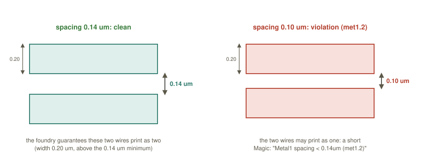
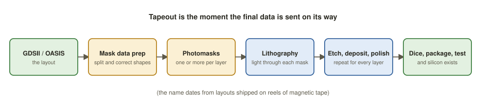

Chapter 8: Physical Verification and Tapeout¶
Routing is done, the parasitics are extracted and timing looks green. But a layout cannot be sent to a factory on optimism. Signoff is the final gate: a battery of exacting, tool-driven checks, all of which must come back clean before the layout is streamed out. A single unresolved violation can cost a full mask set and a delay of months, so the rule is simple: everything must be clean before tapeout.
This chapter walks through every check in turn (design rules, layout versus schematic, antenna, electrical rules, density, IR drop, electromigration and formal equivalence), then explains what a GDSII file actually is, what the foundry does with it, and what the tapeout checklist looks like.
Learning outcomes
After this chapter you can:
- Name the signoff checks and say what each one catches.
- Explain design rule checking, read a DRC report and apply a simple rule by hand.
- Explain layout-versus-schematic checking, and why a DRC-clean layout can still be wrong.
- Describe antenna, ERC and density-fill checks, IR drop and electromigration signoff, and equivalence checking.
- Describe GDSII and OASIS, the foundry's use of them, and the tapeout checklist.
8.1 What signoff means¶
Signoff is the last stage of physical design: the point at which the team formally certifies that the layout is correct, manufacturable and meets its specification. Every earlier stage optimised, using fast, approximate engines; signoff verifies, using slow, exact "golden" engines and the full set of corners. It is normal for a design that passed optimisation to reveal a handful of signoff violations that must then be fixed.
| Check | The question it answers | Open-source tool |
|---|---|---|
| Static timing (STA) | does every path meet setup and hold, at every corner and mode? | OpenSTA |
| DRC | does the geometry obey the foundry's manufacturing rules? | Magic, KLayout |
| LVS | does the layout implement exactly the intended netlist? | netgen |
| Power: IR drop, electromigration | is the supply strong enough everywhere, and for years? | OpenROAD |
| Equivalence (LEC) | is the final netlist still logically identical to the RTL? | Yosys eqy |
Table 8.1 The main signoff checks. Commercial equivalents include PrimeTime, Calibre and Conformal.
Signal-integrity (crosstalk) analysis completes the list; it was introduced in Chapter 6 and is run with the post-route parasitics.
8.2 DRC: can it be built?¶
A design rule check compares every shape of the layout with the foundry's design rule manual, a long list of geometric constraints that guarantee the shapes can be manufactured. Chips are printed with light through masks, and then etched. Draw two wires too close and the light blurs them into one, or the etch bridges them. Every rule traces back to a physical limit: the optical resolution of the stepper, the flatness that polishing can achieve, etch loading. The manual is the foundry's contract: obey it and the foundry guarantees its yield; break it and it will not even accept the mask data.
The rules fall into families: minimum width, minimum spacing, enclosure and overlap (metal must extend past a via by a minimum amount), minimum area, via rules, and density (each layer must hold between a minimum and a maximum fraction of metal in any window, Section 8.4).
| Rule | Layer | Meaning | Minimum (simplified) |
|---|---|---|---|
| met1.1 | metal 1 | width | 0.14 µm |
| met1.2 | metal 1 | spacing | 0.14 µm |
| met1.6 | metal 1 | area | 0.083 µm² |
| via.1 | via 1 | exact via size | 0.15 × 0.15 µm |
| via.4 | metal 1 | enclosure of a via | 0.055 µm |
| poly.2 | poly | spacing | 0.21 µm |
Table 8.2 Illustrative rules in a Sky130-style process. The values are simplified for teaching; always use the foundry's own rule manual for real work.

Example 8.1: Applying the rules by hand
A spacing check. Two parallel metal-1 wires are drawn 0.20 µm wide and 0.10 µm apart. The width, 0.20 µm, is above the 0.14 µm minimum (met1.1 is satisfied), but the spacing, 0.10 µm, is below the 0.14 µm minimum: met1.2 is violated. Moving the wires to 0.14 µm apart makes the layout clean.
An area check. A metal-1 rectangle is 0.14 µm wide and 0.50 µm long. The width is exactly the minimum. Its area is \(0.14 \times 0.50 = 0.070\) µm², below the 0.083 µm² minimum: met1.6 is violated. The rectangle must be lengthened to at least \(0.083 / 0.14 \approx 0.593\) µm.
Running DRC in Magic on the open-source flow looks like this.
# In the Magic console: load the layout, then check the whole cell
load user_proj_example
drc euclidean on
drc check
drc catchup
puts "DRC errors: [drc list count]"
drc why ;# explain the error under the cursor box
The report lists each violation by rule name and place, so that you can zoom straight to it. You read it from the top, fix the biggest clusters first, and iterate until the total is exactly zero.
Metal1 spacing < 0.14um (met1.2)
( 12.480 8.210 ) ( 12.615 8.470 )
Via1 enclosure by Metal1 < 0.055um (via.4)
( 30.010 15.220 ) ( 30.160 15.375 )
Metal2 minimum area (met2.6)
( 44.900 22.100 ) ( 45.010 22.190 )
Total DRC errors found: 3
Each entry gives the rule, a human-readable description and the coordinates of a bounding box. "Clean" means a total of exactly 0.
8.3 LVS: is it the right circuit?¶
DRC proves that the layout can be built; it says nothing about whether it is correct. That is the work of layout versus schematic (LVS), which asks whether the physical layout implements exactly the circuit that the netlist describes. It has two halves.
- Extract. A tool reads the layout shapes, recognises every transistor and other device layer by layer, and traces the metal and vias to build a netlist from the layout.
- Compare. The extracted netlist is matched, device by device and net by net, against the source netlist, the one that was meant to be built. LVS declares a match only when devices agree in type, count and parameters (width and length within tolerance) and the nets joining them form the same graph.
LVS catches what DRC cannot see:
- shorts: two nets that should be separate are touching;
- opens: one net is broken into two;
- wrong connections: a pin on the wrong net, a swapped device, a missing tie-off.
In the open-source flow Magic extracts and netgen compares.
# 1) Magic: extract a SPICE netlist from the layout
extract all
ext2spice lvs
ext2spice -o user_proj_example.spice
# 2) netgen: compare the layout netlist with the source netlist
netgen -batch lvs \
"user_proj_example.spice user_proj_example" \
"user_proj_example.v user_proj_example" \
$PDK_ROOT/sky130A/libs.tech/netgen/sky130A_setup.tcl \
lvs.report
Circuit 1 contains 1842 devices, Circuit 2 contains 1842 devices.
Circuit 1 contains 2013 nets, Circuit 2 contains 2013 nets.
Netlists match uniquely.
Result: Circuits match uniquely.
"Circuits match uniquely" is the phrase to hunt for. Anything else, such as unmatched nets, property errors or differing device counts, must be resolved before signoff.
Common misconception
"DRC-clean means my chip works." DRC only proves that the shapes are manufacturable; it is blind to connectivity. A layout can be 100 % DRC clean and still short two power rails together or leave a clock net floating. Only LVS, together with the electrical and antenna checks, confirms that the layout is the right circuit. You need all of them green.
8.4 Antenna, ERC and density fill¶
Antenna checks. As explained in Chapter 6, a large piece of connected metal can collect plasma charge during fabrication and rupture a thin gate oxide. The antenna rule limits the ratio of connected metal area to the gate area it drives. Signoff verifies every gate and every layer; diodes or layer jumps are inserted where a ratio is exceeded.
ERC, the electrical rule check, finds electrical mistakes that are legal geometry but broken circuits: floating gates, unconnected inputs, power-to-ground shorts, wells tied to the wrong supply, missing substrate or well taps. It is a cheap sanity net that catches connectivity blunders early.
Density fill. Each metal layer is polished flat, but polishing removes more material where metal is sparse and less where it is dense, leaving dips that harm the layers above. To keep density uniform, the tools scatter non-functional dummy metal fill shapes into empty regions so that every window on every layer falls inside the foundry's density band. Fill is added after routing and is deliberately connected to nothing.
8.5 Power signoff: IR drop and electromigration¶
IR drop. Current through the resistance of the power grid makes the local supply sag, \(V = I \times R\). IR-drop signoff simulates the grid under realistic switching activity and checks that the worst droop stays within the budget, commonly a few percent of VDD. Fixes are wider straps, more vias between grid layers or on-chip decoupling capacitance.
Electromigration (EM). High current density pushes metal atoms along a wire over time, thinning it until it opens, or bulging it until it shorts a neighbour. EM signoff checks that the average and peak current density in every wire and via stay below the foundry's limit for the target lifetime. Power and clock nets, which carry the most current, are the usual offenders; the fix is again wider metal and more vias.
IR drop and EM are two sides of the same coin: both are about current in the power grid. IR drop is the instantaneous voltage problem (a droop right now slows a cell); EM is the long-term reliability problem (sustained current wears the wire out over years). Widening a strap and adding vias helps both, which is why a robust grid designed in Chapter 3 pays off all the way to signoff.
8.6 Equivalence checking¶
By the time the netlist reaches signoff it has been through synthesis, scan insertion, clock-buffer insertion and late edits (ECOs). How do we know that it still does what the original RTL specified? Logic equivalence checking (LEC) is a formal, exhaustive proof, not a simulation, that the final gate-level netlist is logically identical to the RTL. It compares the two designs' Boolean functions at every state and output, and if they diverge it reports a counter-example input. Because the method is formal, a pass is a mathematical guarantee and not a sample. In the open-source world Yosys's eqy plays this role; commercially it is Conformal or Formality.
# Yosys-based equivalence check: RTL (gold) versus final netlist (gate)
eqy -f equiv.eqy
# ... partitions proven ...
# Successfully proved designs equivalent
8.7 GDSII, OASIS and tapeout¶
When every check is green the layout is exported in a form the foundry can use. The classic format is GDSII, a binary, hierarchical description of pure geometry. It knows nothing of logic; it is a database of shapes:
- cells (structures): named groups of shapes that can refer to other cells, so a full chip is one top cell referring to thousands of standard-cell definitions;
- polygons and paths: the shapes themselves;
- layer and datatype numbers: which mask each shape belongs to (metal 1, poly, via), mapping the geometry onto the foundry's process layers.
OASIS is the modern successor: the same idea, often ten times smaller and faster to process. Writing either file is called streaming out, and a GDSII file is also called a stream file. KLayout and Magic read and write both.
# Magic: stream out the top cell to GDSII
load user_proj_example
gds write user_proj_example.gds
# KLayout: convert between formats in batch, or simply open the GDS to inspect layers
klayout -zz -rd input=user_proj_example.gds \
-rd output=user_proj_example.oas \
-r strmrun.rb
At the foundry the data goes through mask data preparation (splitting shapes into mask-writer figures and applying optical-proximity correction) and is written onto a set of photomasks, one or more per layer. In the fab a stepper shines light through each mask to pattern photoresist on the wafer (photolithography); etching, deposition, implantation and polishing then build that layer physically. The sequence repeats for every layer; then the wafer is diced, the dice are packaged and tested, and silicon exists (Figure 8.2).

Tapeout is the moment the final data is sent. The word dates from the time when layouts travelled to the factory on reels of magnetic tape.
8.8 The tapeout checklist¶
Before anyone writes the GDSII, every item below must be green.
| Check | Condition |
|---|---|
| Timing (STA) | setup and hold met on every path, all corners and modes; no negative slack |
| DRC | 0 violations against the foundry rule manual |
| LVS | "circuits match uniquely": no shorts, opens or device mismatches |
| Antenna | all antenna ratios within limits (diodes or jumpers inserted where needed) |
| ERC | no floating gates, no power-ground shorts; wells and taps correct |
| Density | every layer inside its minimum and maximum density band (fill added) |
| IR drop | worst-case supply droop within budget |
| Electromigration | current density under the limit for the target lifetime |
| Crosstalk | noise and delay change within margin |
| Equivalence | final netlist formally equivalent to the RTL |
| Test | scan chains verified; coverage target met |
Table 8.3 The tapeout signoff checklist: all must be green.
Signoff is not a rubber stamp
It routinely finds real problems that the faster optimisation engines missed: a stray antenna violation, a hold failure at a corner, an IR-drop hot spot. Budget real schedule for signoff-and-fix iterations; treating signoff as a formality is how respins happen.
Summary¶
- Signoff re-checks everything with exact engines, and every check must be clean.
- DRC: the geometry obeys the foundry's rules. LVS: the layout's extracted netlist matches the intended one. They look at different things, and each is blind to what the other catches.
- Antenna, ERC and density fill, IR drop and electromigration, and formal equivalence complete the list.
- GDSII (or OASIS) is pure geometry by layer; the foundry turns it into masks and, layer by layer, into silicon. Sending it is the tapeout.
Exercises¶
Exercise 8.1: Passes DRC, fails LVS
A layout passes DRC, but LVS reports two nets merged. What is wrong, and would the chip work?
Answer
A short: two wires that should be separate touch. The shapes are buildable, so DRC is happy, but the circuit is wrong and the chip would not work.
Exercise 8.2: Why both?
Why must signoff include both DRC and LVS?
Answer
They look at different things. DRC checks geometry: can it be built? LVS checks connectivity: is it the right circuit? Each is blind to what the other catches.
Exercise 8.3: Apply the rules
Using Table 8.2, say whether each shape is legal. (a) Two metal-1 wires, each 0.16 µm wide, 0.12 µm apart. (b) A metal-1 wire 0.12 µm wide and 5 µm long, far from anything else. (c) A metal-1 square 0.30 µm on a side.
Answer
(a) Illegal: the width is fine (0.16 ≥ 0.14) but the spacing, 0.12 µm, is below 0.14 µm (met1.2). (b) Illegal: the width 0.12 µm is below the 0.14 µm minimum (met1.1), even though its area, \(0.12 \times 5 = 0.6\) µm², is large enough. (c) Legal as far as these rules go: width 0.30 µm is above 0.14 µm, and the area \(0.30 \times 0.30 = 0.09\) µm² is above 0.083 µm².
Exercise 8.4: Break a design rule on purpose
In Magic with the Sky130 technology, you draw two metal-1 rectangles 0.10 µm apart and run drc check and drc why, then move them to 0.14 µm apart and check again. What do you expect to see? Explain in two sentences why a layout can be DRC clean and still fail LVS.
Answer
At 0.10 µm Magic reports a metal-1 spacing violation (rule met1.2, minimum 0.14 µm); at 0.14 µm the spacing is clean. DRC checks shapes only: two correctly spaced wires can still connect the wrong pins, and only LVS, which compares connectivity, can see that.
Exercise 8.5: Reading an LVS report
An LVS run prints "Circuit 1 contains 1842 devices, Circuit 2 contains 1840 devices." Can signoff proceed?
Answer
No. The device counts differ, so the layout and the source netlist cannot match. Two devices are missing from one side (an extra or deleted device, or one that was not recognised). The report names the unmatched devices and nets; they must be found and the mismatch resolved before signoff.
Exercise 8.6: Which check?
Match each problem to the check that finds it: (1) a net that is cut in two by a missing via; (2) a gate oxide ruptured by plasma charge; (3) a netlist that no longer matches the RTL after an ECO; (4) a dished, uneven metal layer.
Answer
(1) LVS (an open). (2) The antenna check. (3) Logic equivalence checking. (4) Density: metal fill added to bring every window into the density band.